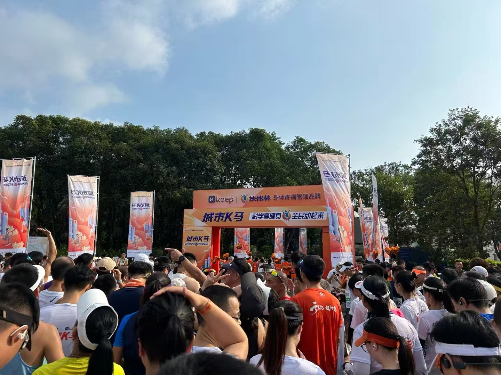
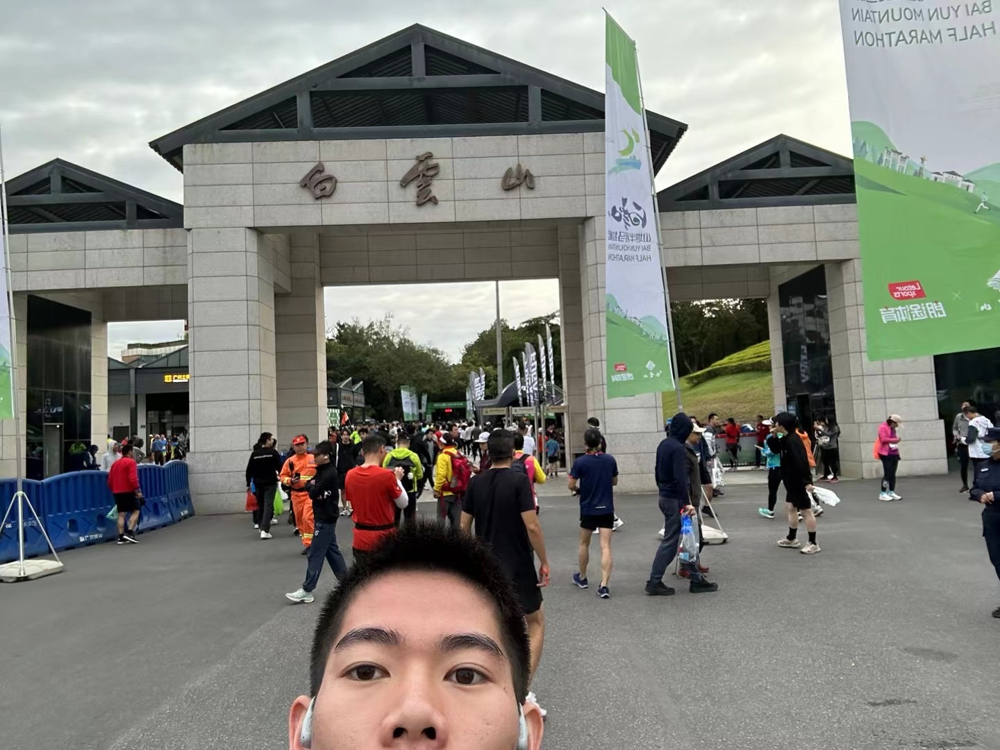
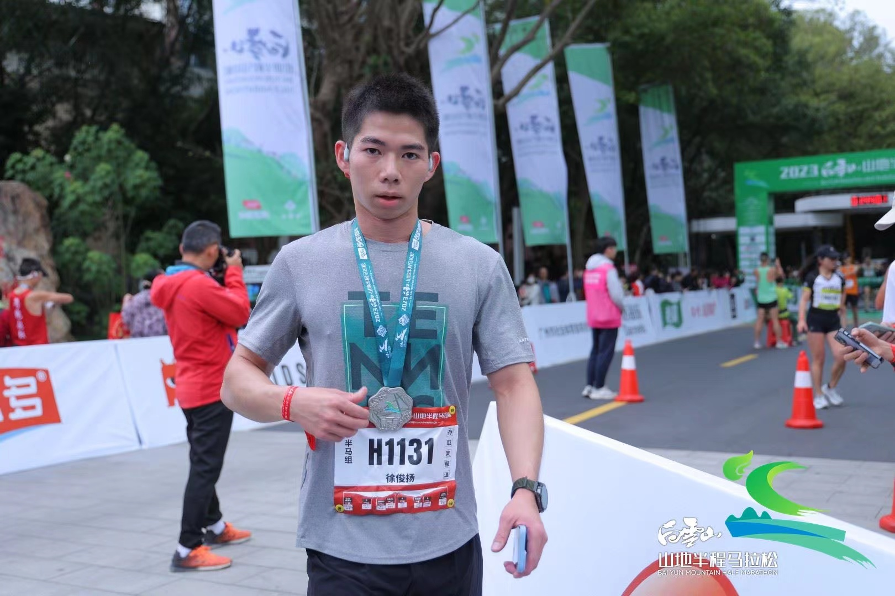
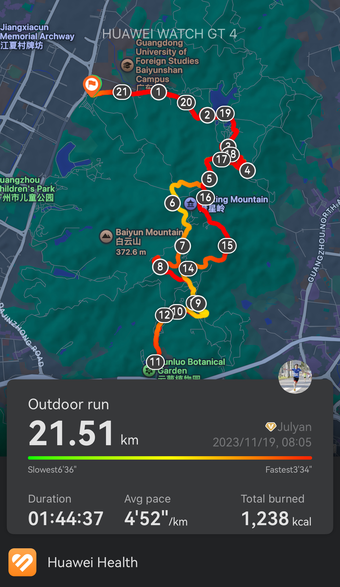
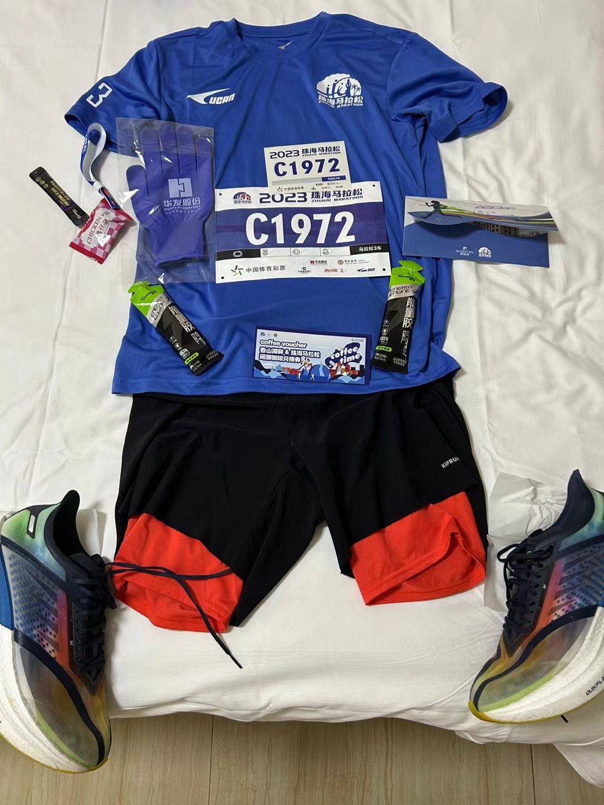
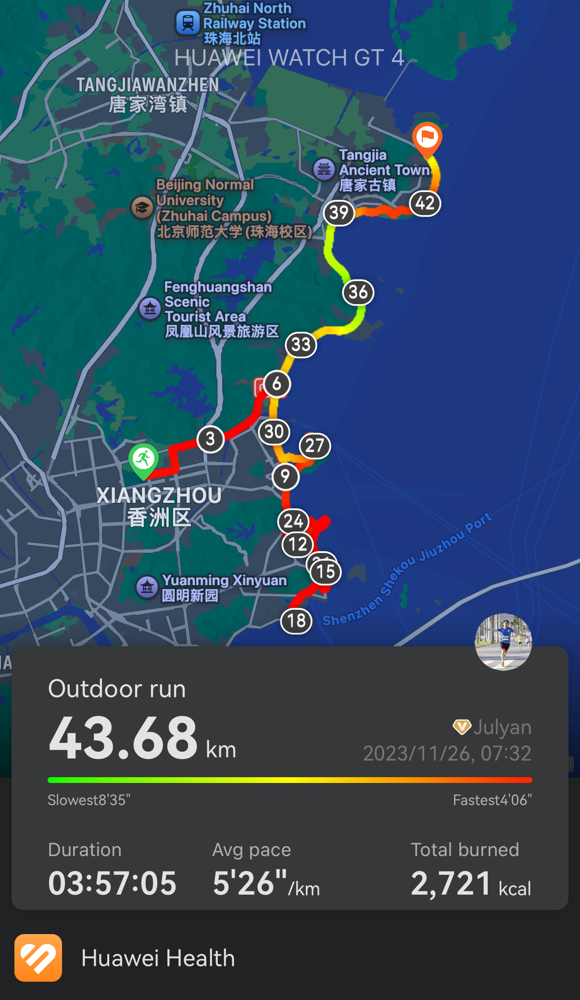
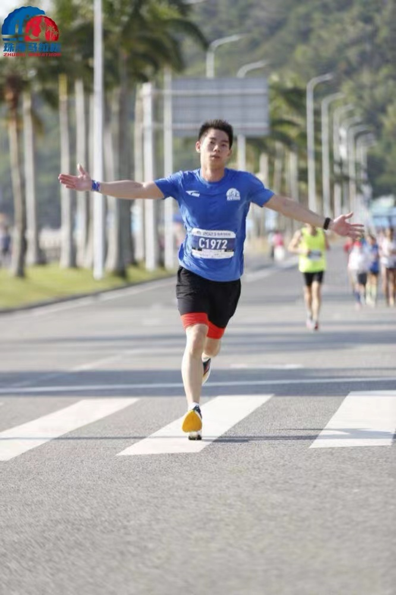
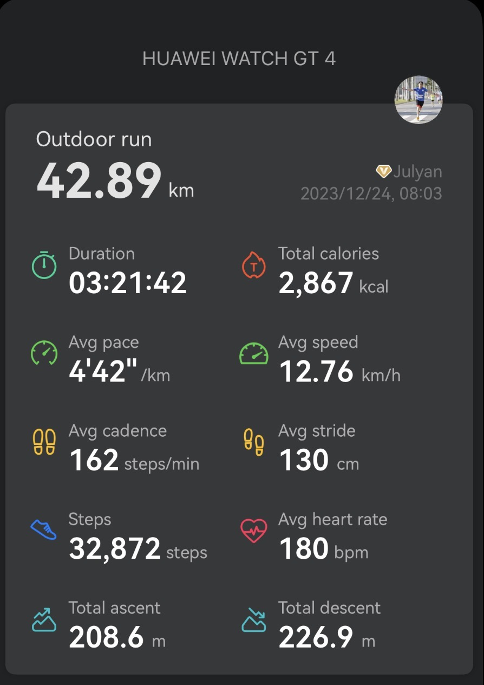
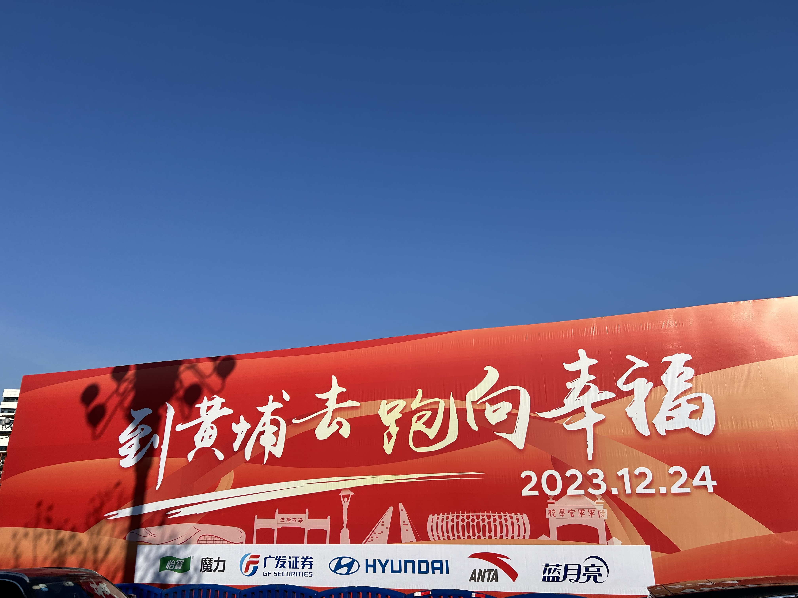
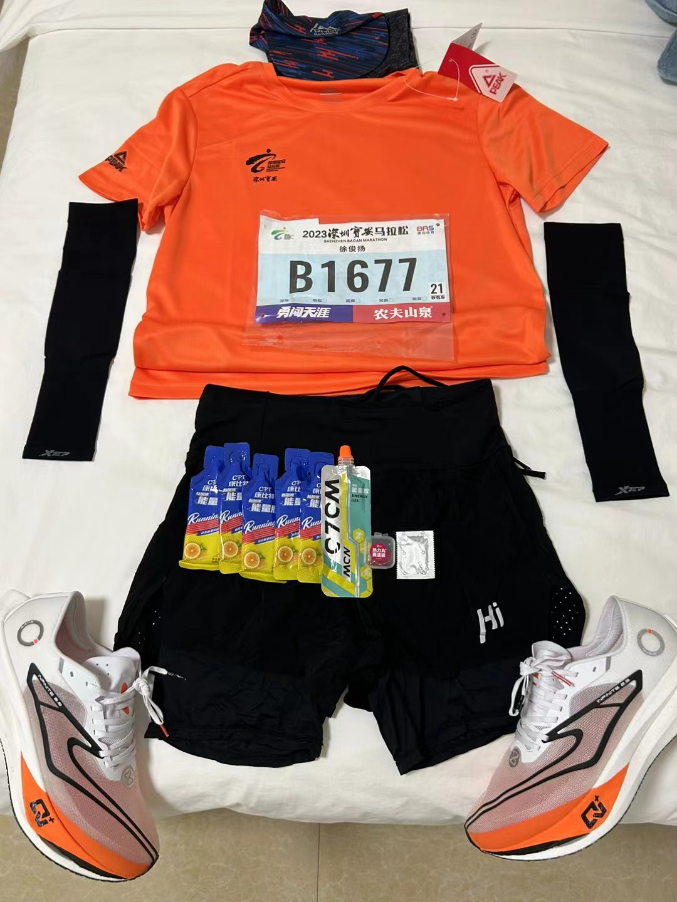

01Keep K马：第一次20公里
我真正接触长跑，是在2023年9月。
那时候，新冠疫情刚结束没多久，生活像是慢慢重新被打开，全国各地的路跑活动也陆续恢复。以前我对“马拉松”这三个字的理解，大概还停留在电视转播、新闻照片，以及“这得多能跑啊”的感叹里。那时的我，单次跑过的最长距离还不超过10公里，却在某种说不清的冲动下，第一次报名了 Keep 的 K马活动——20公里。

marathon-story-assets 文件夹。
现在回想起来，那更像是一次莽撞又真诚的开始。
活动前一天晚上，我兴奋得睡不着。明明知道第二天要跑20公里，身体需要休息，可脑子就是停不下来：路线怎么跑？会不会跑不完？15公里之后是什么感觉？万一坚持不住怎么办？越想越清醒，最后只睡了3个小时。
第二天开跑的时候，整个人却还是亢奋的。前几公里很轻松，甚至有一种“原来20公里也没那么难”的错觉。路上有风，脚步踩在地面上，我感觉自己像是突然进入了一个新的世界。可跑步最诚实的地方就在于，它不会因为你的兴奋而放过你。
到了15公里之后，痛苦开始一点点浮上来。腿变沉，呼吸变乱，原本顺畅的节奏像被人打断。每迈一步，都能感觉到身体在提醒我：你以前从来没有跑到过这里。那种感觉不是简单的累，而是一种从身体深处升起来的怀疑——我真的跑得完吗？
那几公里，我几乎是在和自己谈判。
“再跑一公里就好。”
“不要停，慢一点也没关系。”
“既然已经到这里了，就别让前面的路白跑。”
最后，我还是挺过去了。冲完20公里的时候，我没有想象中那么潇洒，更多的是疲惫、酸痛和一种迟来的兴奋。那一刻我才明白，长跑不是从起点开始的，而是从你第一次想放弃却没有放弃的地方开始的。🏃♂️
02白云山：半只脚踏进马拉松
同年10月，我又报名了广州白云山山地半马。
如果说 K马是我第一次试探长距离，那么白云山山地半马，就是我半只脚踏进马拉松队列的开始。那条路线真的很虐人，前半程几乎全是上坡，后半程又全是下坡，像是把人从一个世界直接扔到另一个世界。前面爬坡的时候，每一步都像在和地心引力对抗；后面下坡的时候，又要控制速度和膝盖，不能让身体完全失控。

marathon-story-assets 文件夹。
那场比赛让我第一次意识到，跑步不只是配速和距离，它还包括地形、天气、节奏，以及你在痛苦中对自己的判断。
前半程上坡时，我经常会忍不住低头看路，心里想：“怎么还没到顶？”身边的人有的开始走，有的呼吸变得很重，我也无数次想慢下来。但山路很奇妙，它让你痛苦，也让你专注。因为你没有太多精力去想别的，只能盯着眼前这一段路，只能告诉自己：先到下一个弯道，再说。
到了后半程下坡，身体像突然获得了解放，风从脸边刮过去，腿却又开始承受另一种压力。那种一半兴奋、一半失控的感觉，让我至今都记得。
冲线的时候，我还拿着手机记录了一下。现在想想，那段视频可能并不专业，画面也许还会晃，但它对我来说特别珍贵。因为那一刻，我不是在记录一个成绩，而是在记录一个新的自己。
从那一刻开始，我心里真的冒出了一句话：
“我好像可以。”

marathon-story-assets 文件夹。

marathon-story-assets 文件夹。
03珠海：首马破4
白云山山地半马结束后的一个星期，我又站上了珠海马拉松的赛场。
这一次，是全马。
42.195公里。
这串数字以前看起来很遥远，可当我真的报名、真的到达珠海、真的站在起点时，它突然变得真实起来。那次我还逛了暨南大学珠海校园，也和一起报名的校友参加比赛。校园、海风、赛道、校友，这些元素混在一起，让那场比赛在我心里多了一层特殊的意义。

marathon-story-assets 文件夹。
但激动归激动，忐忑也是真的。
毕竟这是我第一次全马。前一天晚上，我又只睡了3个小时。身体明明很累，脑子却一直在演练第二天的场景：起跑要不要跟人群？补给点怎么安排？30公里之后会不会崩？能不能跑进4小时？
起跑枪响后，人群一起向前涌动，那种感觉很震撼。第一次参加全马，我真切感受到了观众的簇拥和赛道的热烈。路边的人不断加油，志愿者递水，陌生人的呼喊声一阵阵传来。太阳很大，热得人有些发烫🥵，但那种热情又让人不舍得停下。
前半程，我一直在记录，也一直努力保持节奏。那时候心里还有很多新鲜感，看到路边的风景、跑友和观众，都觉得自己正在经历一件人生大事。可全马真正的考验，往往不会太早出现。
到了30公里，我撞墙了。
那不是一堵真实的墙，却比墙更清晰。身体里的能量像突然被抽走，腿开始不听使唤，步频掉下来，呼吸也不再稳定。之前的信心一点点被消耗，我开始走了一段时间。那一刻，内心其实很复杂：一边觉得自己已经很努力了，一边又不甘心就这样放掉目标。
跑马拉松最难受的地方，不是你累，而是你明明知道终点还很远。
就在我有些动摇的时候，后面的400兔子追上来了。
那一刻，我像突然被敲醒一样。400兔子就像一根移动的警戒线，也像一根救命绳：如果跟住，还有机会破4；如果放掉，也许首马就会留下遗憾。
我记得自己当时没有想太多，只是咬了咬牙，重新跟了上去。腿还是痛，身体还是沉，但心态变了。我不再去想后面还有多少公里，只盯着兔子，只盯着眼前人的背影，只告诉自己：别掉队。
最后，我真的破了4小时。
首马 PB。
冲过终点后，我回头望向终点拱门，心里有一种说不出来的激动。那一刻不是单纯的开心，而是像有很多情绪一起涌上来：疲惫、委屈、庆幸、骄傲，还有一点点不可思议。
我竟然真的完成了全马。
而且，是在第一次全马中跑进了4小时。

marathon-story-assets 文件夹。

marathon-story-assets 文件夹。
从那以后，42.195公里不再只是一个遥远的数字，它变成了我身体和记忆里真实存在过的一段路。
04黄埔：把 PB 顶出来
同年12月，我如愿中签了国际田协精英标的黄埔马拉松。更没想到的是，一周之后的深圳宝安马拉松，我也中了签。
两个都是全马。
当时之所以连续报名两场挨得这么近的马拉松，是因为经过前几轮赛事抽签后，我才真正体会到，中一场国际田协标牌赛事有多难。很多时候不是你想跑就能跑，也不是你报名了就一定能站上赛道。所以当时的想法也很简单：不要预设自己不可能都中，先报名再说。
结果，命运真的把两场比赛都给了我。
经过两个月的休息和调整，我的体能慢慢恢复，也积累了更多长距离训练经验。到了黄埔马拉松赛前，我能明显感觉到自己和刚开始跑步时不一样了。以前面对长距离，更多是紧张和未知；而这一次，我心里多了一些底气。
黄埔马拉松被很多人认为是国内比较虐的赛道之一，坡差大，对体能和心态都是考验。但也正因为这样，我反而更加期待。我知道这不会是一场轻松的比赛，可我也相信，前几次长途路跑和比赛带给我的，不只是体能上的提升，还有心智上的成长。
站在黄埔马拉松的起点，我对自己说：
“这一次，我想 PB。”
全马30公里处，才是真正的开始。
这句话听过很多次，但只有真正跑在赛道上，才会明白它的分量。前30公里，靠训练、靠节奏、靠体力；30公里之后，更多时候靠的是意志、经验，以及你能不能在身体下滑时稳住自己。
黄埔那场，我大概在31公里左右开始有点撞墙。身体状态明显下降，腿部越来越沉，呼吸也没有前面那么从容。可这一次和珠海不同，我没有慌。因为我知道，这种感觉会来，也知道它不一定意味着失败。
我开始把注意力缩小。
不想终点，不想成绩，不想还有多少公里，只想眼前这一公里。补给点到了就喝水，坡来了就稳住，平路就尽量把配速拉回来。脑子里不断重复一句话：
“顶住，再顶一顶。”
那一路，我始终相信自己的潜力和韧性。哪怕身体状态开始下降，我也没有完全放掉目标配速，而是尽量维持，甚至在能顶的时候再往前顶一点。那种过程很痛苦，但也很纯粹。你会感觉自己像是在和另一个自己对抗：一个想慢下来，一个不甘心；一个说够了，一个说还能再坚持。
最后，我以3小时21分的成绩通过终点。
冲线之后，我回看自己跑过的路，心里只有一句话：
这一切都值得。

marathon-story-assets 文件夹。

marathon-story-assets 文件夹。
那些训练中的疲惫，那些赛前的紧张，那些撞墙时的挣扎，那些一个人咬牙坚持的瞬间，都在这个成绩里得到了回应。黄埔马拉松让我知道，努力真的会在某个时刻，以一种很具体的方式回到你身上。
05宝安：状态差时也要完成
一个星期之后，我又站在了深圳宝安马拉松的赛场上。
但这一次，故事没有那么顺利。
从比赛一开始，我就明显感觉到自己的状态极为不佳。身体没有完全恢复，节奏也不对。和黄埔那种“我能PB”的信心不同，宝安一开跑，我心里就隐隐有种不好的预感。
到了15公里，我就撞墙了。
15公里撞墙，对于一场全马来说，实在太早了。那一刻我心里几乎是崩溃的：这场比赛完了。前面还有那么多公里，怎么完成？如果30公里撞墙，至少已经跑完了大半；可15公里的时候就开始痛苦，后面每一公里都像是提前透支。
跑马拉松最痛苦的，不是单纯的累，而是你知道自己不在状态，却还要面对一段非常遥远的路程。
弃赛的念头不是没有出现过。可很快，我又把它压了下去。大老远来了，报名费交了，比赛也开始了，我想要完赛，想要奖牌，也想给这段连续作战的经历一个交代。
于是后面的比赛，变成了一场漫长的拉扯。
15公里，20公里，25公里，30公里……
每一个数字都像一道关。
到了后面，31、32、33、34公里，每一公里都变得特别漫长。我几乎是走走停停，跑一段，缓一段，再重新跑起来。那时候已经没有太多配速上的幻想，只剩下一个非常朴素的目标：完成它。
赛道上的人来来往往，有人超过我，也有人和我一样放慢脚步。每当我想停久一点，心里又会冒出一个声音：
“可以慢，但不要放弃。”
这句话支撑着我一点点往前挪。
宝安马拉松没有黄埔那样的顺畅，也没有珠海首马破4时的热血。它更像是一场关于忍耐的考试。它让我明白，并不是每一场比赛都会按照计划发生，也不是每一次站上赛道都能遇到最佳状态。马拉松教人的地方就在这里：它不仅奖励你状态好的时候跑得快，也考验你状态差的时候能不能坚持到最后。
最终，我还是以4小时以内完成了比赛。
那一刻，我没有特别兴奋，更多的是一种终于结束的释然。身体很累，心也很累，但当我拿到奖牌的时候，还是觉得这一路没有白来。
06回望：跑过距离，也跑过自己
回头看2023年，从9月第一次尝试20公里，到10月白云山山地半马，再到珠海首马破4，12月黄埔跑到321，最后又在宝安艰难完赛，我像是在短短几个月里，把自己推到了一个完全陌生又不断扩大的世界里。
长跑改变我的，不只是身体。
它让我知道，兴奋会过去，热情会波动，状态会起伏，赛道也不会总是平坦。但只要你还愿意往前，哪怕慢一点，哪怕走一段，你都还在路上。
马拉松最迷人的地方，也许从来不是终点那一刻，而是你在无数次想放弃时，又一次次选择继续。
从20公里到42.195公里，我跑过的不只是距离，也是那个不断怀疑、不断崩溃、又不断重新站起来的自己。🏅

marathon-story-assets 文件夹。